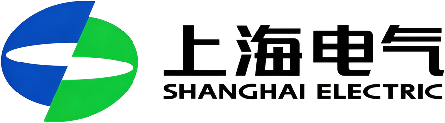
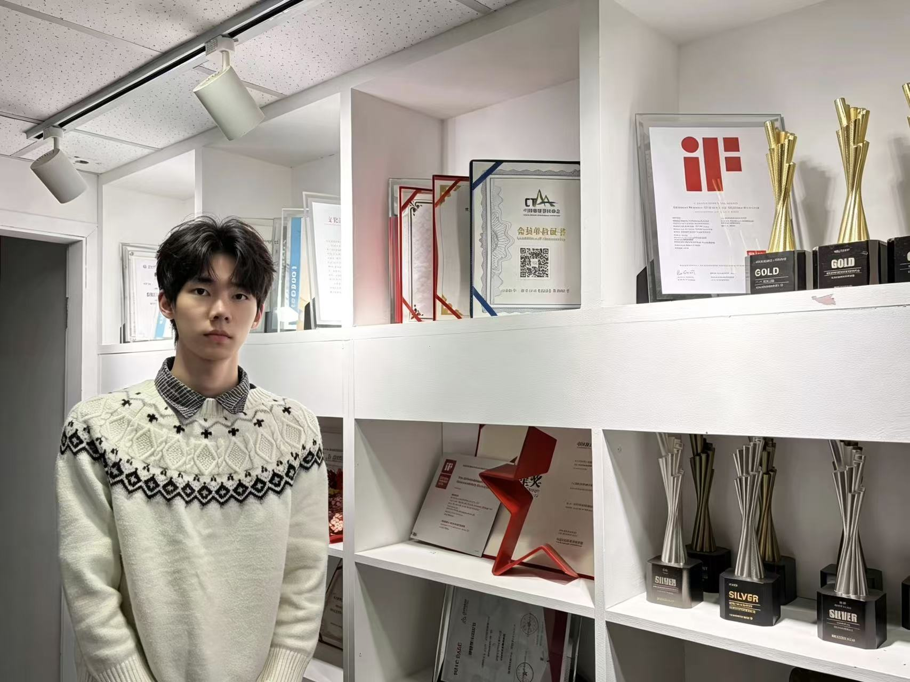
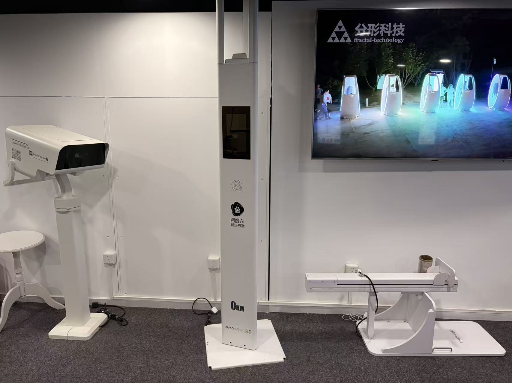
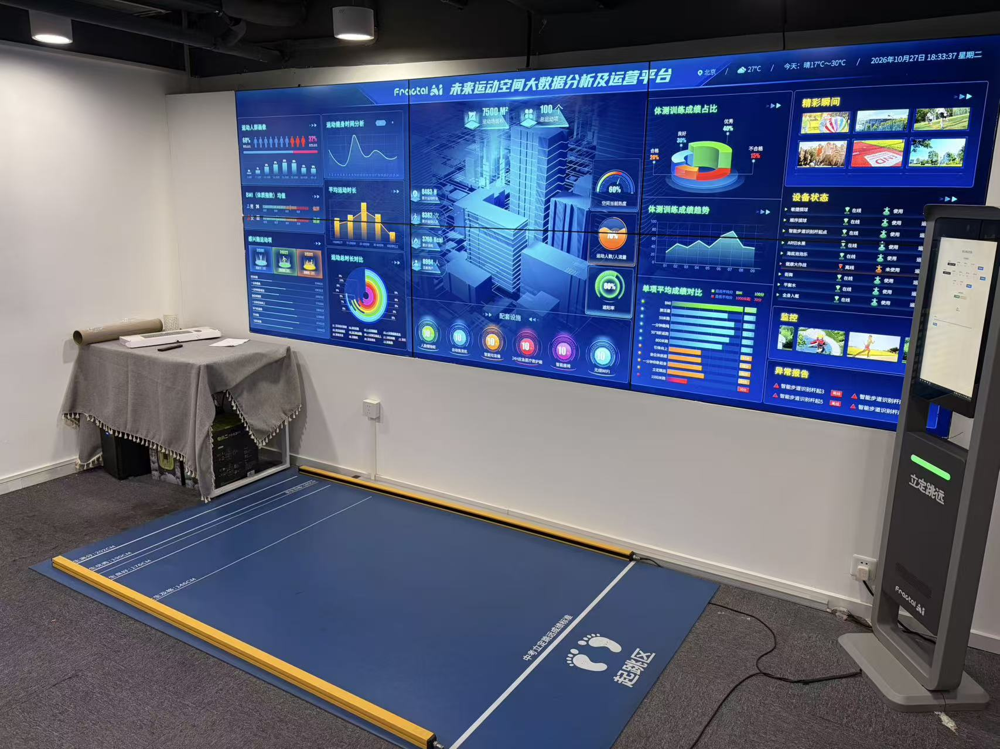

北京分形科技有限公司 | 项目助理 / 副总经理助理（实习）
项目部 / 销售部 | 2025.10–至今

面向上海电气、国家管网、中国建投、北京协和医院、四川华西医院、上海瑞金医院、北京大学、大湾区大学等企业级客户，参与业务调研与需求访谈，梳理业务流程、用户角色与核心痛点，形成需求澄清清单，为售前方案与项目推进提供依据。
参与撰写/维护《项目需求规格说明书》，将客户业务诉求转化为功能需求、非功能需求与验收标准，明确项目范围与交付边界，提升需求可理解性与可评审性。
完成网站/系统信息架构梳理，包括栏目规划、导航层级、页面流程与关键路径设计；输出页面原型并参与评审，推动客户与内部团队快速达成一致。
作为需求侧接口人对接 UI、开发、测试及销售团队，跟进设计稿、开发排期、问题清单与交付节点，推动问题闭环，保障项目按计划推进。
协助副总经理进行项目信息汇总、会议纪要、任务拆解与进度督办，协调跨部门资源，提升内部沟通与执行效率。
服务客户覆盖高端制造、能源管网、金融投资、医疗、高校等行业，积累企业级项目在合规、安全、体验与多角色协作方面的理解。



- 需求分析
- 售前支持
- 信息架构
- 原型设计
- 项目跟进
- 跨部门协作
- 客户沟通
- 交付管理
- 会议纪要
- 任务督办